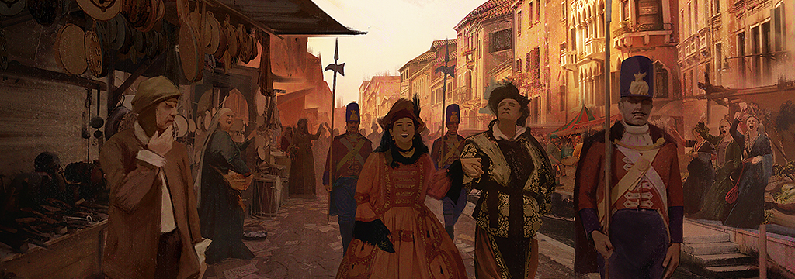
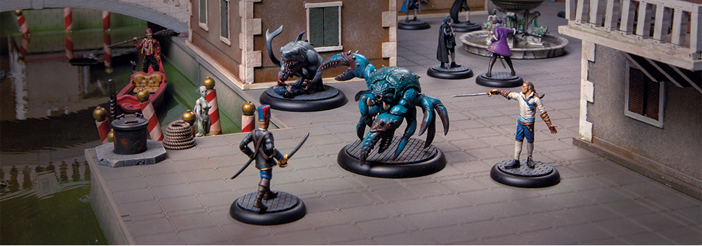

Though it boasts to be one of the oldest republics in the world, Venice and its empire is nevertheless organised and run for the most part to the benefit of a very
small portion of its inhabitants. Its laws, traditions and history have been shaped by the needs and demands of the Patrician families that rule the city through
the Doge’s government. It may not have a king or queen, but La Serenissima is arranged no less for the benefit of the aristocratic few than the monarchies of
Europe.
The power of the ruling classes has been under threat for a while, not just within Venice, but throughout Europe as the merchantile and artisan classes gain wealth and land.
Many rich families of Venice, ones who had always had power and position, were shrunk to almost nothing by Venice's poor economy. As trade and ship building dwindled to nothing
in Venice, these families got smaller and smaller, many losing everything. High society became even more insular, rather prop up rivals and neighbours than let the entire
system, a system they relied on, to collapse.


The French Revolution gave power to the peasant population of Europe, and throughout Europe the upper class was executed and destroyed. Venetian aristocracy was partly spared this fate since public
opinion of them had dwindled so low that they weren't seen as the power they once were, and so many had gone abroad to seek new fortune. When the rent opened Venice was spared
much of the destruction and devastation that affected other cities. Though there was much chaos, the aristocracy was far from wiped out.
Once the world started to calm down after the effects of the Rents opening, Venice was primed to grow. The docks saw an massive influx of trade, ships were
built at a fast rate and Venice grew and grew. The money which swiftly began to flow back into the city started to go back to the Aristocracy. This time
however, the Patricians city-wide had learned from their time of struggle, and they would do everything they could to prevent it from happening again.
They hoarded their wealth, kept the divide between rich and poor as wide as possible, lest the poor have a chance to rise up once again.
The Patricians now live lives of decadence, the Carnevale forever ongoing. Nobles hold parties that last days, parties where nothing is off limits. Orgies, cannibalism, extravagant feats and of
course, violence in the streets are a common occurrence. Caught in an ongoing addiction to power over others, the Patricians care nothing for the peasantry, seeing them as
sport to be hunted at best. Sexual deviance and acts considered depraved in any other society are rife, violence a nightly occurrence, death a celebration.
Every night these 'Masqurettas' take to the streets, spreading violence and bloodshed. Noble families with little money left give their votes away to the highest bidder so they can cling on to power and wealth. Nicknamed the
'Barnobotti', they join in the Masqurettas with as much blood filled pleasure as any noble. Foreign Nobles with a taste of the more debase aspects of Carnevale Venice come
to join in these wild parties. The City Guard are now nothing more than a collection of thugs, paid off to turn a blind eye, or worse. No common citizen is safe once the
Masquretta is in full swing, the Patricians will have their party no matter the cost in blood or dignity.
Federico went over the plan in his mind one last time; he would enter the masquerata and hide himself until the host appeared, waiting for the opportune moment to
kill him. Reaching the entrance, Federico gained access easily, thanks to the passing of a few coins between himself and the doorman. Hiding amongst the crowd, he
approached the dining table and helped himself to some food so as to blend into the rest of the party.
It did not take long for the guests to filter through to the ballroom where a small podium had been erected. Upon it stood a man and woman,
waiting patiently for the last few people to enter. The man, whom Federico assumed to be the host - and therefore his target - raised a hand
to silence the crowd, smiling until all eyes were upon him.
“Welcome everyone, to the finest masquerata in all of Venice! I hope you enjoy the festivities and of course, my food and wine,” he paused as
the crowd chuckled. “Tonight's main event is something very special,” he continued. “I am proud to give to you fine citizens an offering. We
will experience first-hand a reprobate from the Guild battle for his life against the man who personally trained me in the art of sword-play -
my fencing master.” The man beckoned the crowd towards his previous master, who had moved to the centre of the ballroom. “Now I will introduce
his opponent, a man who works for that most slimy organisation. Ladies and gentleman of the masquerata, I present to you - the Guild wretch!”

Federico felt a sharp impact on the back of his head as he was hit to the ground. Two guards picked him up and threw him into the centre of the ballroom to the
sound of hissing and booing from the crowd. The fencing master grinned as he drew his rapier, tossing a spare next to Federico. Despite having the breath knocked
out of him, Federico grasped the sword and held it towards his opponent.
With an almost instantaneous gesture from the host, the fencing master lunged towards his prey. The attack was so swift that it caught Federico completely off guard,
the point grazing his rib and causing him to stagger backwards. His opponent came again and this time nicked Federico's shoulder, before retreating once more. This
way of combat was alien to Federico and he had no way to defend against it. The fencing master had trained his whole life in the art of sword-play and Federico knew
he could not win through conventional ways.
Advancing forward aggressively, he dodged a thrust which would have pierced his neck, and proceeded to head-butt the swordsman. Before giving his opponent the chance to recover,
Federico seized his opportunity and slashed his sword across the enemy's knee, causing the fencing master to scream in pain.
Triumphantly, Federico raised his sword and stabbed down through his enemy’s chest, piercing flesh and bone. The host looked aghast at the death of a long-time friend
but composed himself quickly. Sure, this hadn't gone quite as expected but the night and the masquerata had only just begun.


With very strong leaders and heroes the Patricians have access to some of the most powerful characters in the game. A good range of weapons: ranged and close combat,
good stat lines, lots of buffs through various abilities, a Patrician gang are few in number but very powerful. The Venetian noble is a very good all-rounder, able
to fight very well in combat or shoot from afar. Even the henchmen of the Patricians can hold their own against some other factions heroes- the Barnabotti's are
similar in ability to the Noble. The City Guard are solid at holding the line and are adept with a rifle or bayonet. The true strength to a Patrician gang however,
is its heroes. They are able to call upon a plethora of strong heroes which specialise in particular aspects of the game. The Fencing Master for example is able to
find weak spots on his opponents armour, nearby Patricians benefit from this and gain extra penetration.